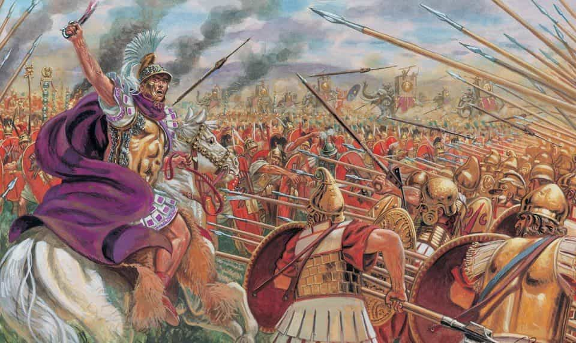
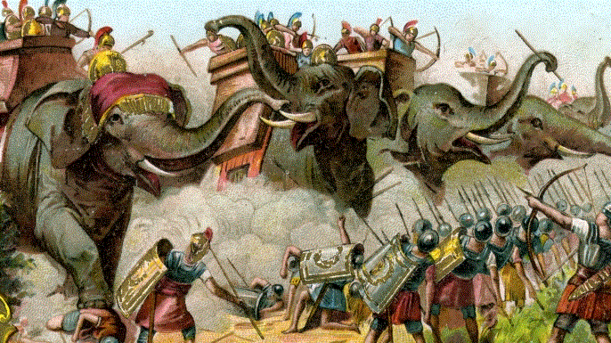
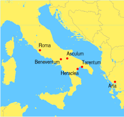
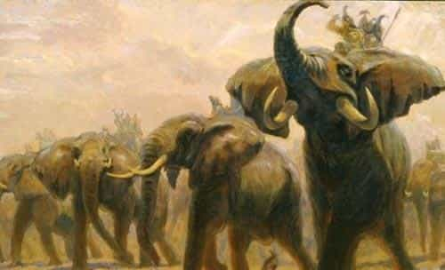
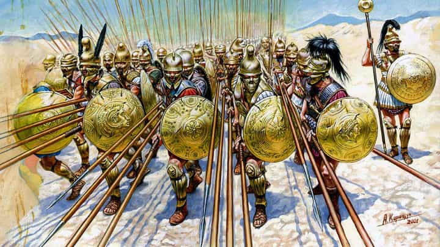
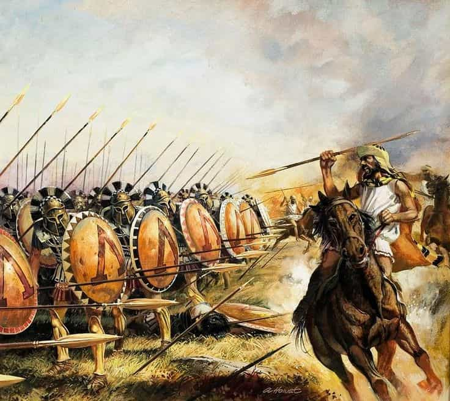
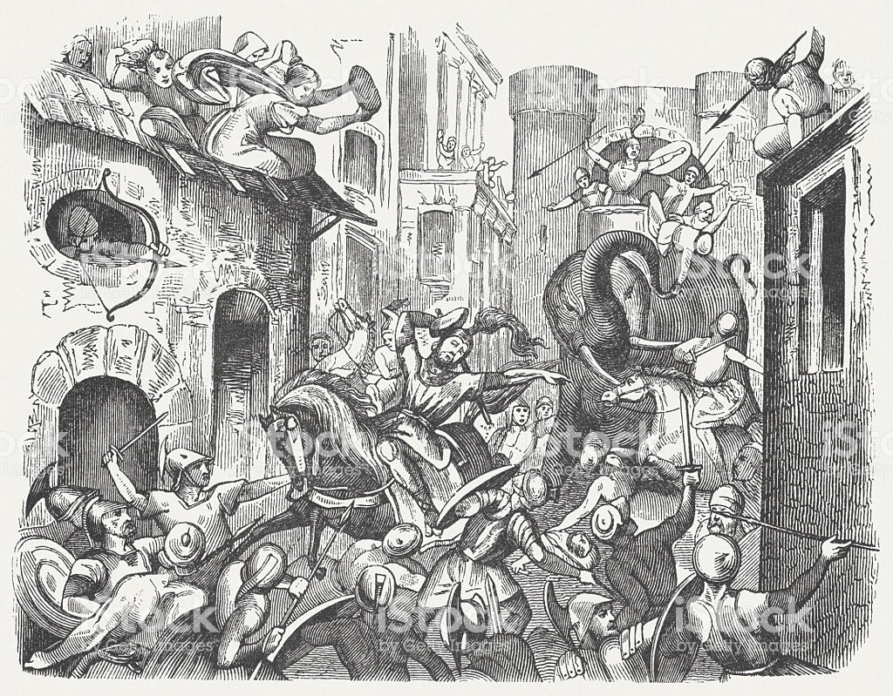

Damian Black is an American nationalist deploring the decline and seeking to rid the scourge of oblivion. Visit his nascent personal interest: The Black Decree


Most learned men know of the term “Pyrrhic victory”, an achievement against so brutal a force that the success both advances and ruins oneself. Derived from Pyrrhus of Epirus, the voracious king of the most powerful state in the Greek world. This is his story, of the man who seized every opportunity and lost everything.
It was the year 280 BC. The Greek colony of Tarentum in southern Italy was soon to face definite defeat from the hostile and powerful early Roman Empire.
The most famous soldier of his time, Pyrrhus accepted an offer to protect the city. In this endeavor though, as in others, he actually only played the field to dominate for himself.
Outnumbered 40,000 to 30,000, Pyrrhus’s army consisted of Thessalian cavalry, the best of all Greece; twenty catastrophically disruptive war elephants; and Alexander’s devastatingly effective Macedonian phalanx, as well as many archers and slingers.

As cavalry collided and ranged units rained fire, the renowned infantry lines met. Seven offenses from the phalanxes could not break past the Roman legionaries, the strongest opponents they had ever faced. The battle remained unsettled.
During the vicious battle, Pyrrhus knew if he faltered in combat his soldiers would lose the morale to continue. He wisely switched armor with a bodyguard, who was later swarmed and killed.
As word spread, his men wavered while the Romans roared in success at what they thought was a decisive turning point. Realizing the gravity of the situation, Pyrrhus took off his helm, and in a display of pure courage and leadership, fearlessly rode along his frenzied front lines to reveal himself. Now his army returned the cheer in their own massive uproar. The heated battle flamed onward.

Realizing they were equally matched, Pyrrhus finally deployed his elephants to surprise the flanking Roman cavalry. The frightened horses fled at the sight of the bizarre, jagged gargantuans and caused chaos among the Romans.
Finally he launched the Thessalians to secure victory. Augmented by surrounding tribes after his victory at Heraclea and emboldened by the success, he marched forward to invade the heart of the empire, Rome herself.

Pyrrhus met opposition at Asculum, both sides double their previous number and nearly equivalent at 70,000 infantry, 8,000 cavalry, and others, with 300 Roman wagons of various ingenious designs created to counter the triumphant war elephants.
This is where he would state his famed comment of Pyrrhic victory. The Battle of Asculum was so vast and disastrous that three accounts exist that claim completely different strategies and even victors: that of Plutarch, Cassius Dio, and Dionysius.
What is undeniable is that through coordinated maneuvers and routing, the armies engaged in colossal pandemonium as Roman swords slashed against the thrusts of Macedonian sarissas.

Plutarch’s account determined that Pyrrhus had defeated the Roman commander, but his personal Epirot army, amongst mercenaries and allies, was nearly decimated. Though Rome lost 6,000 men, Pyrrhus lost 3,500 as well as many commanding officers.
If we are victorious in one more battle with the Romans, we shall be utterly ruined.
A majority of his men, especially his leadership, had been lost. His Italian allies had no more interest to battle the Romans, and against the home field advantage of swift replenishment and supplies, he knew he could not win a war without such reinforcements.
Pyrrhus turned his sights to other conquests, but his fortunes had fallen. Asked to become ruler of Macedonia after his ally King Ptolemy Keraunos had been killed, he chose instead to campaign in Sicily against Carthage, the other most powerful state of the western Mediterranean beside Rome, for greater gain.
Though militarily successful, he acted tyrannically to the Sicilians in an attempt to gather the manpower and resources he required, soon falling out of their favor. He returned to southern Italy to defend against Rome once more in the Battle of Beneventum, but the outcome was inconclusive.

Exhausted, he took his spent army and funds back to his homeland of Epirus, allowing Rome to dominate the Greek colonies in southern Italia and thus forfeiting all the gains of his Italian campaign except for Tarentum.
After easily seizing the disordered Macedonia against King Antigonus II Gonatas, Pyrrhus hounded him down to secure the throne. Taking Antigonus’s mercenaries, Pyrrhus then directly called out the names of the demoralized Macedonian officers at his next meeting with Antigonus’s army, convincing the entire infantry to desert.
However, instead of finishing off the escaped Antigonus, Pyrrhus restlessly looked to Sparta and Argos, the two most valuable Peloponnesian cities. His offense on Sparta was blocked off in unexpected force, and when he looked again, Antigonus had now sided with allies in Argos.

Pyrrhus sent his Gallic forces into the city, gaining the marketplace, but his elephants had trouble entering past Argos’s unaccommodating gates. Argive and Macedonian forces flooded the narrow city streets.
Seeing the Gauls surrounded, he advanced into the city and sent a messenger to his son Helenus so that the main body of his army would break down Argos’s walls for his troops to exit. However, a miscommunication occurred and Helenus instead entered with the rest of the elephants and soldiers.

In the stark environment, he gave one last fight amidst immense confusion. As soldiers both left and entered the city, the elephants so useful in battles past panicked and blocked the gateway. Chaos erupted.
While in combat against an Argive, the soldier’s old mother, watching from a rooftop, threw a tile that knocked Pyrrhus from his mount. The fall paralyzed him, and confirmation of death was given through a Macedonian decapitation.
Alcyoneus, one of Antigonus’s sons, took Pyrrhus’s head and rode to throw it at his father’s feet. Instead of expressing pride as expected, in a heartfelt rage Antigonus struck Alcyoneus and enragedly called him a barbarian.
He burst into tears as he remembered the fates of his ancestry. His father, his grandfather; both had suffered the same dishonorable misfortune. Cremated in ceremony and full honors, Pyrrhus was respected by his foes and Helenus sent safely back to Epirus.
Reconstruction of Argos
Upon news of Pyrrhus’s death, Tarentum surrendered to Rome. Italy‘s peninsula was subsequently divided and conquered, the Greek colonies becoming a vital region of the empire. The Pyrrhic War internationally demonstrated that Rome could dance with the dominant Mediterranean military powers. In the only possibility to halt its expansion, the Hellenistic world foolishly remained content with a failed invasion.
As for the fate of Epirus, his daughter was murdered as the last of Epirote royalty. An inept federal republic sprung, split in advocacy during the Third Macedonian War and ending in Roman enslavement. Antigonus’s line continued until Macedonia fell too to Roman rule.
The Roman Empire had seized supreme dominance.
Pyrrhus of Epirus, renowned for his bravery, insatiability, and vain clashes against the major powers of the time: Rome, Carthage, Sparta, Argos; was laughably ended by the hand of an old woman and a segment of her roofing. He is immortalized as the ferocious, daring leader who lost everything he gained in life and everything he loved in death. A true Pyrrhic victory: the price of a forlorn existence for a valiant eternity in history.
Read more: The Roots Of Masculinity In Ancient Rome